먼저 꼭 읽어 주세요
- 공유받은 단축어 링크로는 자동으로 켜지고 꺼지지 않아요. 차에 탈 때 켜지게 하려면 자동화를 이 iPhone에서 직접 만들어야 해요. 아래 그림을 보세요.
- RoadSentry 동작은 따로 받을 필요가 없어요. 앱을 설치하면 단축어 앱 동작 목록에 ‘감시 시작’과 ‘감시 정지’가 이미 들어 있어요. 자동화를 만들 때 이걸 직접 고르는 게 가장 확실해요.
- 단축어가 실행돼도 앱 화면은 열리지 않아요. 뒤에서 조용히 감시를 켜요. 켜졌는지는 3. 잘 되는지 확인에서 보는 법을 알려 드려요.
단축어
무엇을 할지
예) RoadSentry ‘감시 시작’
링크로 공유돼요
자동화
언제 실행할지
예) 내 차 블루투스에 연결될 때
공유가 안 돼요
자동으로 켜지려면 ‘언제’(자동화)가 꼭 있어야 해요. 그래서 이 iPhone에서 직접 만들어야 해요.
1처음 시작하기
설치하고 권한을 허용하는 단계예요. 한 번만 하면 돼요.
-
App Store에서 ‘RoadSentry’를 설치해요
무료예요. 회원 가입이나 로그인은 없어요.
-
약관 두 칸을 체크하고 ‘동의하고 계속’
소개 화면에서 다음을 누르다 보면 위치서비스 약관이 나와요.
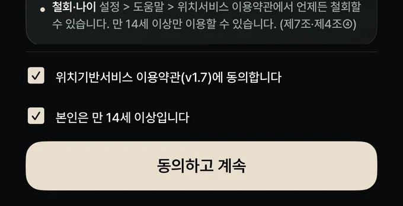
① 두 칸 모두 체크 → ② 동의하고 계속RoadSentry 1.0.3 실제 화면 그다음 다음을 두 번 누르고 마지막에 시작하기를 눌러요.
-
위치 권한 창에서 ‘앱을 사용하는 동안 허용’
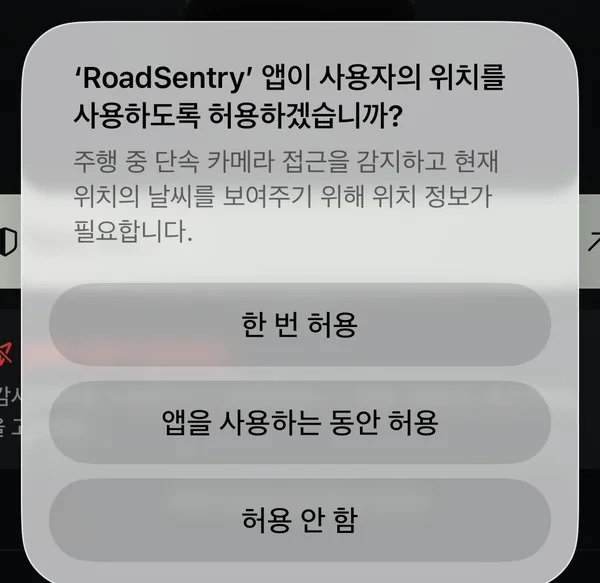
‘한 번 허용’은 고르지 마세요RoadSentry 1.0.3 실제 화면 -
‘주행’ 탭에서 ‘감시 시작’을 눌러요
빨간 글씨 ‘백그라운드 위치 권한을 확인해 주세요’가 보여도 괜찮아요. 다음 단계에서 해결돼요.
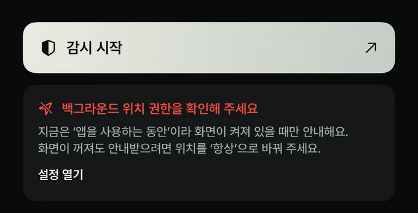
RoadSentry 1.0.3 실제 화면 -
다음 창에서 ‘항상 허용으로 변경’
화면이 꺼져 있어도 안내를 받으려면 꼭 필요해요.
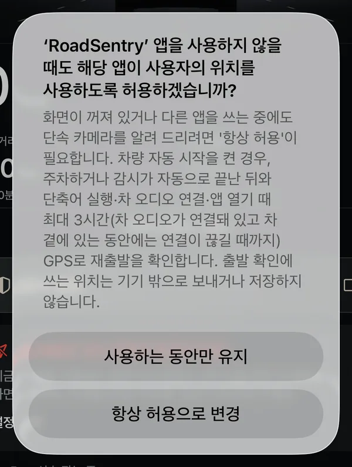
RoadSentry 1.0.3 실제 화면 -
알림은 원하면 ‘허용’ (선택)
감시 시작, 폰 음량이 낮을 때 알려 줘요. 안 해도 안내 음성은 나와요.
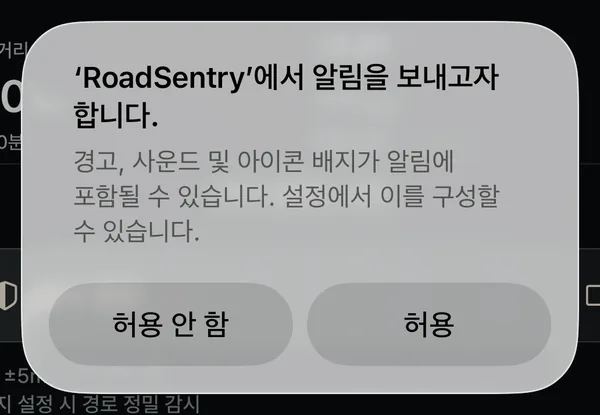
RoadSentry 1.0.3 실제 화면 -
‘감시 종료’ 버튼이 보이면 켜진 거예요
버튼 글자가 ‘감시 종료’면 지금 감시 중이에요. ‘감시 시작’일 때만 눌러 주세요.
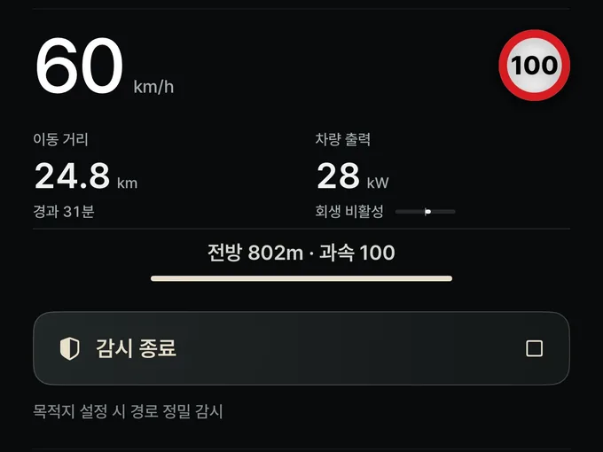
버튼을 누르면 감시가 끝나요RoadSentry 1.0.3 실제 화면
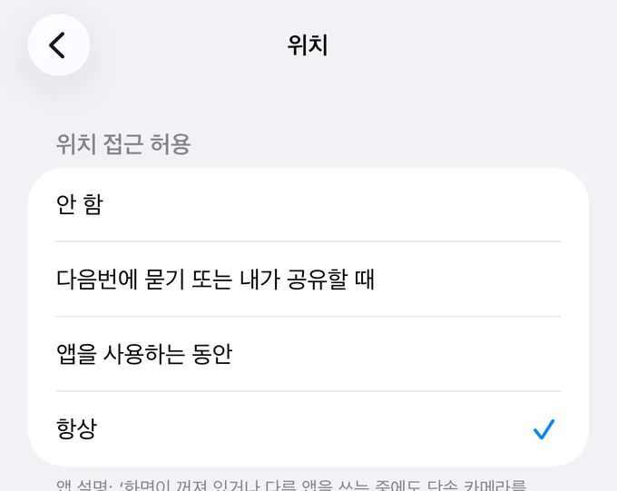
2자동 시작 설정
차에 타면 저절로 켜지고, 내리면 저절로 꺼지게 해요. iPhone 기본 앱인 단축어 앱에서 만들어요.
차에 연결될 때 → 감시 시작필수
이 자동화에는 다른 동작을 넣지 마세요.
안내를 폰 스피커로 듣기선택
①과 따로 만들어요. 없으면 안내는 차 스피커로 나와요.
차에서 연결 해제될 때 → 감시 정지필수
앱의 ‘감시 종료’ 버튼과 같아요. 내리면 바로 끝내요.
① 차에 연결될 때 → 감시 시작
-
단축어 앱을 열고 ‘자동화’ → ‘새로운 자동화’
이미 만든 자동화가 있으면 오른쪽 위 ＋를 눌러요.
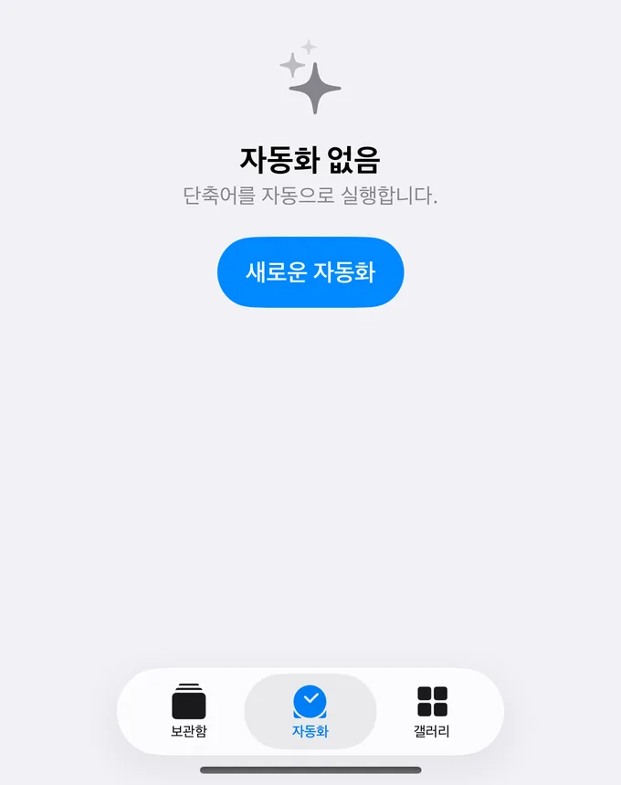
① 아래 ‘자동화’ 탭 → ② ‘새로운 자동화’iPhone 단축어 앱 실제 화면 (iOS 26) -
목록을 조금 내려 ‘Bluetooth’를 눌러요
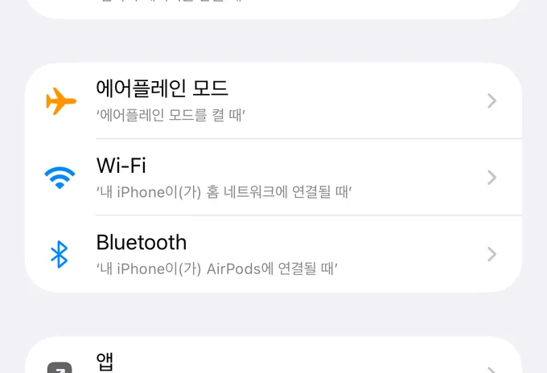
iPhone 단축어 앱 실제 화면 (iOS 26) -
조건을 이렇게 맞춰요
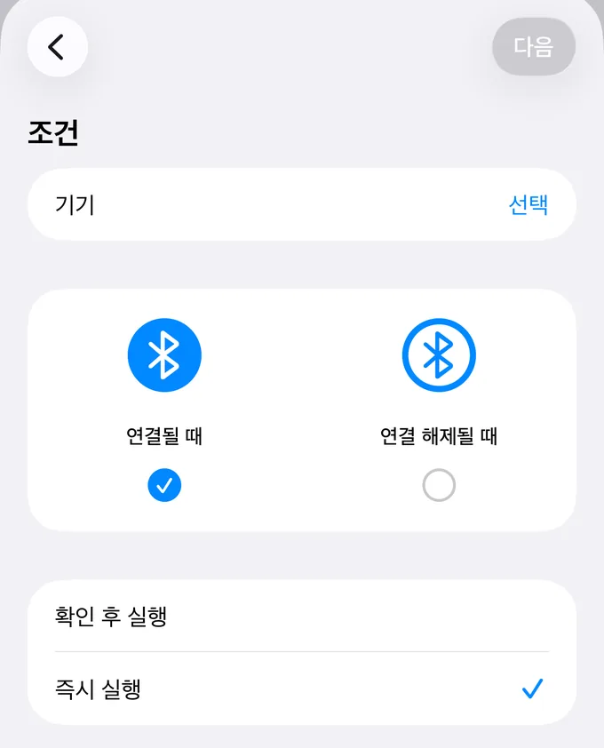
iPhone 단축어 앱 실제 화면 (iOS 26) - 1기기 옆 ‘선택’ → 내 차를 골라요 (다음 그림)
- 2연결될 때에 체크
- 3즉시 실행에 체크
- 4오른쪽 위 다음 (기기를 골라야 눌려요)
-
기기 목록에서 내 차 이름을 골라요
차 화면의 블루투스 메뉴에 보이는 이름과 같은 걸 고르세요. 다른 기기를 고르면 차에 타도 실행되지 않아요.
AirPods내 차 이름 (예: Model Y)1다른 블루투스 기기이 iPhone과 한 번이라도 연결했던 기기만 보여요.
재현 그림 · 실제 화면과 글자·모양이 조금 다를 수 있어요 -
‘새로운 빈 자동화’를 골라요
공유받은 단축어를 고르지 말고, 빈 자동화에서 시작해요.
＋ 새로운 빈 자동화1내 단축어공유받은 단축어 등아래 ‘내 단축어’는 고르지 마세요.
재현 그림 · iOS 버전에 따라 이 화면 없이 바로 ‘동작 검색’이 나오기도 해요 -
동작 검색에 ‘RoadSentry’ → ‘감시 시작’
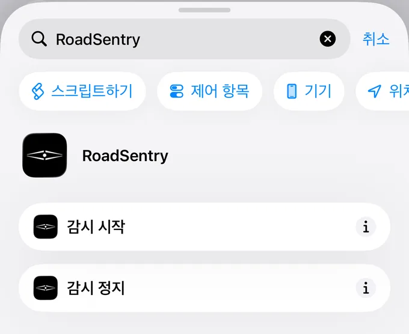
① ‘RoadSentry’ 입력 → ② ‘감시 시작’iPhone 단축어 앱 실제 화면 (iOS 26) -
‘감시 시작’ 하나만 있으면 끝
다른 동작은 넣지 말고 오른쪽 위 완료를 눌러요.
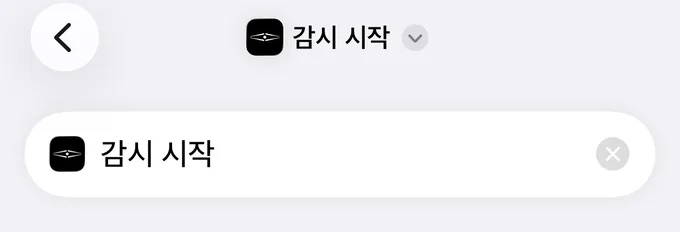
iPhone 단축어 앱 실제 화면 (iOS 26)
② 안내를 폰 스피커로 듣기 선택
차 스피커 대신 iPhone 스피커로 안내를 듣고 싶을 때만 만들어요. ①에 넣지 말고 새 자동화로 만들어요. 차 음악 연결이 조금 늦게 붙어 소리를 다시 가져가기 때문이에요.
-
①의 1~5단계와 똑같이 만들어요
Bluetooth → 내 차 → 연결될 때 → 즉시 실행 → 새로운 빈 자동화.
-
동작을 이 순서대로 넣어요
대기 8초 → 재생 대상 iPhone → 대기 3초 → 재생 대상 iPhone → 미디어 음량
동작 검색에서 ‘대기’, ‘재생 대상’, ‘음량’을 찾으면 나와요. iOS 버전에 따라 이름이 ‘재생 대상 설정’ 또는 ‘재생 대상 변경’, ‘음량 설정’으로 보여요.
- 대기 8초
- 재생 대상 iPhone
- 대기 3초
- 재생 대상 iPhone
- 미디어 음량 원하는 크기
재현 그림 · 위에서 아래로 이 순서대로 넣어요
③ 차에서 연결 해제될 때 → 감시 정지
-
①처럼 Bluetooth 자동화를 하나 더 만들어요
이번에는 연결 해제될 때에 체크하고, 즉시 실행에 체크해요.
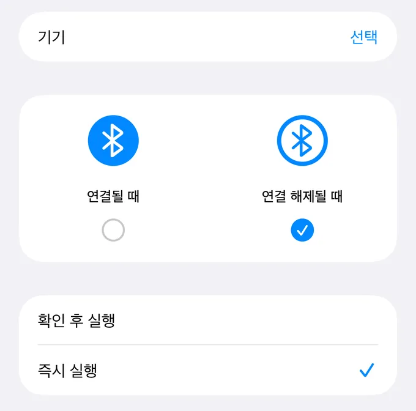
① 연결 해제될 때 → ② 즉시 실행iPhone 단축어 앱 실제 화면 (iOS 26) -
동작 검색 ‘RoadSentry’ → ‘감시 정지’
① ‘RoadSentry’ 입력 → ② ‘감시 정지’iPhone 단축어 앱 실제 화면 (iOS 26) ‘감시 정지’ 하나만 넣고 완료.
3잘 되는지 확인하기
자동화를 만든 뒤 한 번 차에 타 보고, 앱에서 실행 기록을 확인해요.
-
RoadSentry → 설정 → 알림
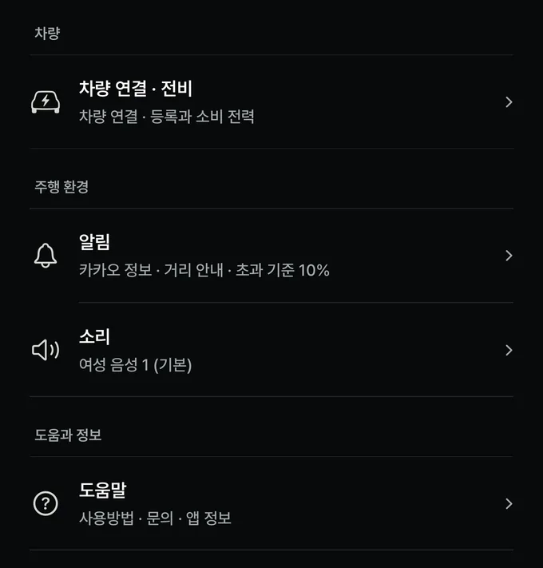
RoadSentry 1.0.3 실제 화면 -
맨 아래 ‘최근 실행’ 시각을 봐요
차에 탄 시각이 보이면 ①이 잘 실행된 거예요.
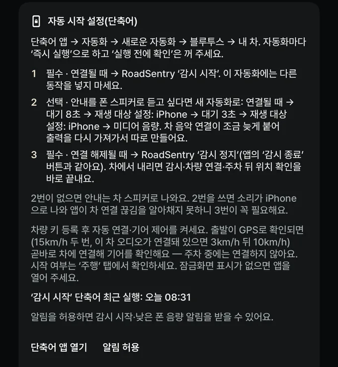
① 최근 실행 시각 · ② 단축어 앱 열기RoadSentry 1.0.3 실제 화면 -
빨간 글씨가 보이면 자동화를 다시 확인해요
최근에 운전했는데 ①이 하루 넘게 실행되지 않으면 이렇게 떠요. 새 폰으로 바꿨거나 자동화가 꺼졌을 수 있어요.
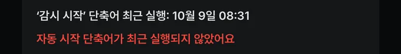
RoadSentry 1.0.3 실제 화면
차에서는 이렇게 동작해요
테슬라 연결을 안 했을 때
차 블루투스가 연결되면 바로 감시가 켜져요. 소리 없이 켜지니, 앱을 열어 ‘감시 종료’ 버튼이 보이는지로 확인해요.
테슬라 연결을 했을 때
타자마자 켜지지 않고, 출발이 GPS로 확인되면 “주행을 시작합니다”라고 말하며 켜져요. 차 오디오가 연결돼 있으면 약 3km/h 뒤 10km/h에서, 아니면 15km/h가 두 번 확인될 때예요. 그래서 출발 뒤 몇 초 늦을 수 있어요.
4테슬라 연결 선택
안 해도 카메라 안내는 다 돼요. 연결하면 기어(D·P)로 시작·종료하고, 전비를 계산해요.
-
RoadSentry → 설정 → 차량 연결 · 전비
RoadSentry 1.0.3 실제 화면 -
‘차량 VIN’에 17자리를 넣어요
차 화면 → 소프트웨어, 또는 앞유리 왼쪽 아래에 있어요.
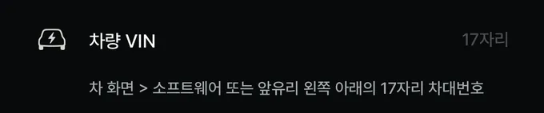
RoadSentry 1.0.3 실제 화면 -
차 안이나 차 옆(10m 안)에서 키를 등록해요
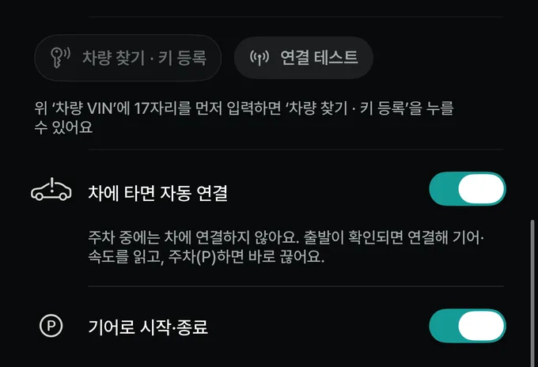
RoadSentry 1.0.3 실제 화면 - 1차량 찾기 · 키 등록을 누르고, 카드키를 차의 카드키 인식 부분에 대요. 위치는 차종마다 달라요. 차 화면 안내를 따르세요. 차 화면에 뜬 키 추가 요청에서 ‘확인’.
- 2차에 타면 자동 연결 켜기
- 3기어로 시작·종료 켜기
- 4연결 테스트로 잘 붙는지 확인
테슬라 연결로 더 편해지는 것
3시간 안에 다시 타면 단축어 없이도 켜져요. 주차(P)하거나 오래 서 있어서 감시가 저절로 끝난 뒤 약 3시간 안에 다시 출발하면, GPS로 출발을 알아채 감시를 켜요.
하룻밤 주차처럼 오래 쉬었다 탈 때나, ‘감시 종료’ 버튼·‘감시 정지’ 단축어로 끝낸 뒤에는 이 기능이 동작하지 않아요. 그래서 ① 단축어는 꼭 만들어 두세요.
안내 때 차 음악 소리 낮추기
RoadSentry → 설정 → 소리 → 안내 때 차 볼륨 낮추기
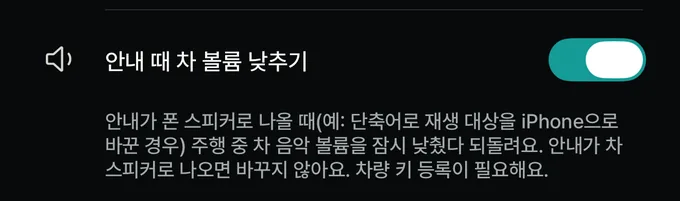
안내가 폰 스피커로 나올 때(② 자동화를 만든 경우)만 차 음악을 잠깐 낮춰요. 차 키 등록이 필요해요. 안내가 차 스피커로 나오면 iPhone이 알아서 음악을 낮추니 켤 필요 없어요.
5자주 묻는 질문
눌러서 펼쳐 보세요.
공유받은 단축어 링크를 추가했는데 자동으로 안 켜져요
링크로는 단축어(무엇을 할지)만 받아져요. 차에 탈 때 실행되게 하는 자동화(언제 실행할지)는 공유가 안 돼요. 애플이 보안 때문에 막아 두었어요.
단축어
무엇을 할지
예) RoadSentry ‘감시 시작’
링크로 공유돼요
자동화
언제 실행할지
예) 내 차 블루투스에 연결될 때
공유가 안 돼요
자동으로 켜지려면 ‘언제’(자동화)가 꼭 있어야 해요. 그래서 이 iPhone에서 직접 만들어야 해요.
그래서 2. 자동 시작 설정대로 이 iPhone에서 자동화를 직접 만들어 주세요. 공유받은 단축어는 지워도 돼요.
자동화를 만들었는데도 안 된다면 이 두 가지를 확인해요.
- 자동화의 Bluetooth 기기가 내 차 이름이 맞나요? (공유받은 것 안에 다른 사람 차 이름이 들어 있을 수 있어요)
- 즉시 실행으로 되어 있나요? ‘확인 후 실행’(실행 전에 확인)이면 운전 중엔 실행되지 않아요.
RoadSentry 단축어는 어디서 받나요?
따로 받을 필요가 없어요. 앱을 설치하면 단축어 앱 동작 검색에 ‘RoadSentry’를 입력했을 때 ‘감시 시작’과 ‘감시 정지’가 이미 나와요.
자동화를 만들 때 이걸 직접 고르는 게 가장 확실해요.
단축어가 실행됐는데 앱 화면이 안 열려요
정상이에요. 단축어는 앱을 열지 않고 뒤에서 감시를 켜요. 앱을 열면 ‘감시 종료’ 버튼이 보여요. 테슬라 연결을 했다면 출발이 확인될 때 “주행을 시작합니다”라고 알려요.
차에 탔는데 자동으로 안 켜져요
하나씩 확인해 보세요.
- 세 자동화 모두 즉시 실행인가요?
- 자동화의 기기가 내 차인가요? (이어폰 등 다른 기기를 고르지 않았나요?)
- 폰이 이미 차에 연결된 채였나요? 계속 연결돼 있으면 ‘새로 연결됨’이 없어서 자동화가 실행되지 않아요. 차에서 내렸다 다시 타거나, 블루투스를 껐다 켜 보세요.
- 위치 권한이 ‘항상’인가요? (1. 처음 시작하기)
- RoadSentry 설정 → 알림 → ‘최근 실행’ 시각이 바뀌었나요? (3. 확인)
‘단축어 앱 열기’를 눌렀는데 자동화 만드는 화면이 안 나와요
애플이 다른 앱에서 자동화 만들기 화면으로 바로 보내는 방법을 열어 두지 않았어요. 단축어 앱 첫 화면이 열리면 아래 ‘자동화’ 탭을 눌러 주세요.
단축어 없이도 켜지나요?
- 앱을 열면 켜져요. ‘앱 열면 자동 시작’이 기본으로 켜져 있어요. (설정 → 알림)
- ‘감시 시작’ 버튼을 직접 눌러도 돼요.
- 테슬라 연결을 했다면 주차(P)나 정차로 감시가 끝난 뒤 약 3시간 안에 다시 출발할 때 GPS로 알아채 켜져요.
하룻밤 주차처럼 오래 쉬었다 탈 때는 단축어 자동화가 있어야 저절로 켜져요.
지하 주차장에서 나갈 때 늦게 켜져요
지하에서는 GPS가 잡히지 않아요. 밖으로 나와 GPS가 잡힌 뒤에 출발을 확인해서 조금 늦을 수 있어요. 잠시 기다리면 켜져요.
테슬라 폰 키랑 같이 써도 안전한가요?
- RoadSentry는 문을 열거나 잠그는 기능이 없어요.
- 1.0.2부터 주차 중에는 차에 연결하지 않아요. 그래서 테슬라 앱 폰 키와 부딪히지 않아요.
- 출발이 확인된 뒤에만 연결해 기어·속도를 읽고, 주차(P)하면 바로 끊어요. 1.0.3부터는 출발이 확인되는 즉시 연결해요(위치 약관 v1.7 동의 시).
- 차 키 목록에 RoadSentry 키가 하나 보여요. 폰을 바꿀 때는 차 화면 ‘잠금’ 메뉴의 키 목록에서 지워 주세요.
안내가 나올 때 음악 소리가 줄어요 / 안 줄어요
안내가 차 스피커로 나오면(블루투스로 폰 소리가 차에서 나오는 경우) iPhone이 알아서 음악을 잠깐 낮춰요. 앱 설정과 상관없어요.
‘안내 때 차 볼륨 낮추기’는 안내가 폰 스피커로 나올 때(② 자동화를 만든 경우)만 써요. 차 키 등록이 필요해요.
새 iPhone으로 바꿨어요
- 새 iPhone에서 자동화가 그대로 있는지 단축어 앱 → 자동화 탭에서 확인하고, 없으면 2. 자동 시작 설정대로 다시 만들어요.
- 테슬라 연결을 했다면 차 화면 키 목록에서 예전 RoadSentry 키를 지우고, 새 iPhone에서 키를 다시 등록해요.
안내가 실제와 달라요 / 카메라를 놓쳤어요
위치·통신·제공 정보에 따라 안내가 늦거나 빠질 수 있어요. 실제 도로 표지와 제한속도를 먼저 봐 주세요. 차를 세운 뒤 진단 로그를 보내 주시면 원인을 찾는 데 큰 도움이 돼요.
6문의하기
문제가 생기면 진단 로그를 먼저 보내고, 받은 접수번호를 함께 알려 주세요.
-
설정 → 도움말 → 진단 로그
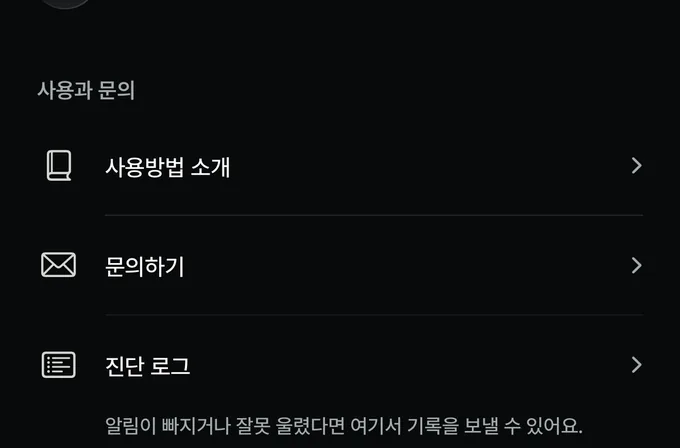
RoadSentry 1.0.3 실제 화면 -
‘진단 기록 보내기’를 눌러요
정확한 위치(좌표·진행 방향)는 지운 뒤 보내요. 목적지 이름도 빠져요.
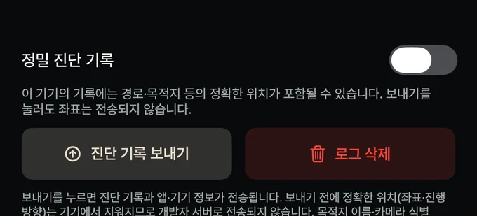
RoadSentry 1.0.3 실제 화면 -
접수번호와 상황을 알려 주세요
언제, 어디쯤(대략), 무엇이 이상했는지 적어 주시면 돼요.